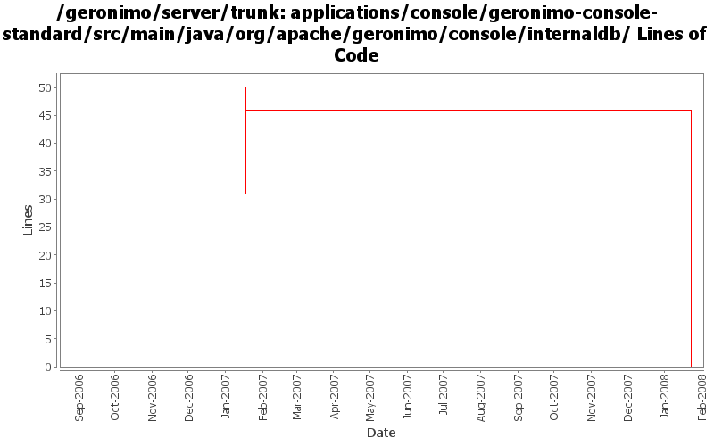

[root]/applications/console/geronimo-console-standard/src/main/java/org/apache/geronimo/console/internaldb

| Author | Changes | Lines of Code | Lines per Change |
|---|---|---|---|
| Totals | 28 (100.0%) | 51 (100.0%) | 1.8 |
| jdillon | 18 (64.3%) | 27 (52.9%) | 1.5 |
| kevan | 10 (35.7%) | 24 (47.1%) | 2.4 |
(GERONIMO-3747) Moved applications/* to plugins/*
0 lines of code changed in 7 files:
(GERONIMO-2748) Use DerbyConnectionUtil.getDerbyHome() instead of relying on system properties to find the bits under var/derby
7 lines of code changed in 2 files:
(GERONIMO-2748) Added getDerbyHome() helper to query DerbySystemGBean for the configured value
20 lines of code changed in 1 file:
GERONIMO-2537 Update more src file headers to be compliant with new apache policy. Also made some updates for consistency
24 lines of code changed in 10 files:
Use logging instead of System.out and printStackTrace
0 lines of code changed in 6 files:
(GERONIMO-2346) Fixed groupId so the DB Info page works again; applied patch from Bill Dudney... thanks :-)
Added some logging around the initialization code to show details if this breaks again
0 lines of code changed in 2 files: